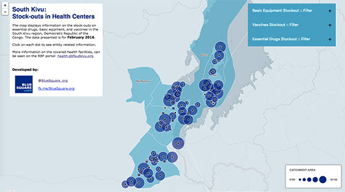
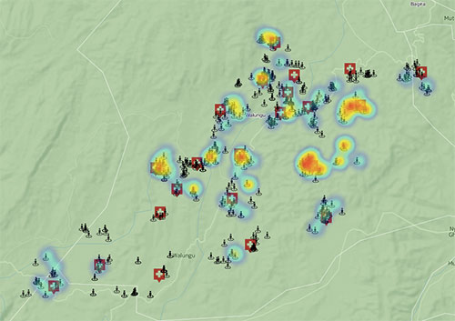
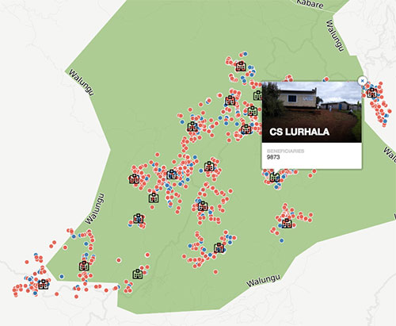

February 2016
South Kivu: Stock-outs in Health Centers
Information on the stock-outs on essential drugs, basic eqipment, and vaccines in South Kivu, DRC.

February 2016
Pregnant Woman Not Sleeping Under a Mosquito Net
How many patients were treated in a health centers in South Kivu without having mosquito net on the bed

February 2016
South Kivu Patients Feedbacks
Location of interviewed patients in South Kivu, during the period of February, 2016.